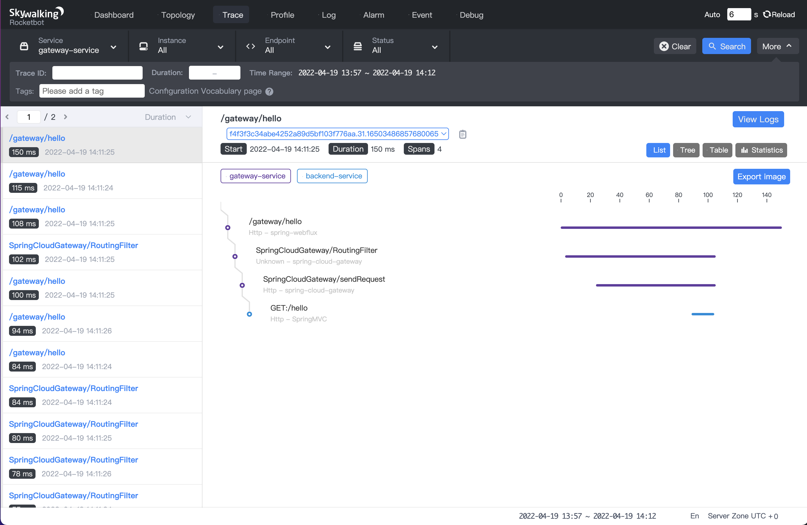

How to use the java agent injector?
content:
1. Introduction
1.1 What’s SWCK?
SWCK is a platform for the SkyWalking user, provisions, upgrades, maintains SkyWalking relevant components, and makes them work natively on Kubernetes.
In fact, SWCK is an operator developed based on kubebuilder, providing users with Custom Resources ( CR ) and controllers for managing resources ( Controller ), all CustomResourceDefinitions（CRDs）are as follows:
1.2 What’s the java agent injector?
For a java application, users need to inject the java agent into the application to get metadata and send it to the SkyWalking backend. To make users use the java agent more natively, we propose the java agent injector to inject the java agent sidecar into a pod. The java agent injector is actually a Kubernetes Mutation Webhook Controller. The controller intercepts pod events and applies mutations to the pod if annotations exist within the request.
2. Features
-
Transparent. User’s applications generally run in normal containers while the java agent runs in the init container, and both belong to the same pod. Each container in the pod mounts a shared memory volume that provides a storage path for the java agent. When the pod starts, the java agent in the init container will run before the application container, and the injector will store the java agent file in the shared memory volume. When the application container starts, the injector injects the agent file into the application by setting the JVM parameter. Users can inject the java agent in this way without rebuilding the container image containing the java agent.
-
Configurability. The injector provides two ways to configure the java agent: global configuration and custom configuration. The default global configuration is stored in the configmap, you can update it as your own global configuration, such as
backend_service. In addition, you can also set custom configuration for some applications via annotation, such as “service_name”. For more information, please see java-agent-injector. -
Observability. For each injected java agent, we provide CustomDefinitionResources called
JavaAgentto observe the final agent configuration. Please refer to javaagent to get more details.
3. Install SWCK
In the next steps, we will show how to build a stand-alone Kubernetes cluster and deploy the 0.6.1 version of SWCK on the platform.
3.1 Tool Preparation
Firstly, you need to install some tools as follows:
- kind, which is used to create a stand-alone Kubernetes cluster.
- kubectl, which is used to communicate with the Kubernetes cluster.
3.2 Install stand-alone Kubernetes cluster
After installing kind , you could use the following command to create a stand-alone Kubernetes cluster.
Notice! If your terminal is configured with a proxy, you need to close it before the cluster is created to avoid some errors.
$ kind create cluster --image=kindest/node:v1.19.1
After creating a cluster, you can get the pods as below.
$ kubectl get pod -A
NAMESPACE NAME READY STATUS RESTARTS AGE
kube-system coredns-f9fd979d6-57xpc 1/1 Running 0 7m16s
kube-system coredns-f9fd979d6-8zj8h 1/1 Running 0 7m16s
kube-system etcd-kind-control-plane 1/1 Running 0 7m23s
kube-system kindnet-gc9gt 1/1 Running 0 7m16s
kube-system kube-apiserver-kind-control-plane 1/1 Running 0 7m23s
kube-system kube-controller-manager-kind-control-plane 1/1 Running 0 7m23s
kube-system kube-proxy-6zbtb 1/1 Running 0 7m16s
kube-system kube-scheduler-kind-control-plane 1/1 Running 0 7m23s
local-path-storage local-path-provisioner-78776bfc44-jwwcs 1/1 Running 0 7m16s
3.3 Install certificates manger(cert-manger)
The certificates of SWCK are distributed and verified by the certificate manager. You need to install the cert-manager through the following command.
$ kubectl apply -f https://github.com/jetstack/cert-manager/releases/download/v1.3.1/cert-manager.yaml
Verify whether cert-manager is installed successfully.
$ kubectl get pod -n cert-manager
NAME READY STATUS RESTARTS AGE
cert-manager-7dd5854bb4-slcmd 1/1 Running 0 73s
cert-manager-cainjector-64c949654c-tfmt2 1/1 Running 0 73s
cert-manager-webhook-6bdffc7c9d-h8cfv 1/1 Running 0 73s
3.4 Install SWCK
The java agent injector is a component of the operator, so please follow the next steps to install the operator first.
- Get the deployment yaml file of SWCK and deploy it.
$ curl -Ls https://archive.apache.org/dist/skywalking/swck/0.6.1/skywalking-swck-0.6.1-bin.tgz | tar -zxf - -O ./config/operator-bundle.yaml | kubectl apply -f -
- Check SWCK as below.
$ kubectl get pod -n skywalking-swck-system
NAME READY STATUS RESTARTS AGE
skywalking-swck-controller-manager-7f64f996fc-qh8s9 2/2 Running 0 94s
3.5 Install Skywalking components — OAPServer and UI
- Deploy the OAPServer and UI in the
defaultnamespace.
$ kubectl apply -f https://raw.githubusercontent.com/apache/skywalking-swck/master/operator/config/samples/default.yaml
- Check the OAPServer.
$ kubectl get oapserver
NAME INSTANCES RUNNING ADDRESS
default 1 1 default-oap.default
- Check the UI.
$ kubectl get ui
NAME INSTANCES RUNNING INTERNALADDRESS EXTERNALIPS PORTS
default 1 1 default-ui.default [80]
4. Deploy a demo application
In the third step, we have installed SWCK and related Skywalking components. Next, we will show how to use the java agent injector in SWCK through two java application examples in two ways: global configuration and custom configuration.
4.1 Set the global configuration
When we have installed SWCK, the default configuration is the configmap in the system namespace, we can get it as follows.
$ kubectl get configmap skywalking-swck-java-agent-configmap -n skywalking-swck-system -oyaml
apiVersion: v1
data:
agent.config: |-
# The service name in UI
agent.service_name=${SW_AGENT_NAME:Your_ApplicationName}
# Backend service addresses.
collector.backend_service=${SW_AGENT_COLLECTOR_BACKEND_SERVICES:127.0.0.1:11800}
# Please refer to https://skywalking.apache.org/docs/skywalking-java/latest/en/setup/service-agent/java-agent/configurations/#table-of-agent-configuration-properties to get more details.
In the cluster created by kind, the backend_service may not be correct, we need to use the real OAPServer’s address default-oap.default to replace the default 127.0.0.1, so we can edit the configmap as follow.
$ kubectl edit configmap skywalking-swck-java-agent-configmap -n skywalking-swck-system
configmap/skywalking-swck-java-agent-configmap edited
$ kubectl get configmap skywalking-swck-java-agent-configmap -n skywalking-swck-system -oyaml
apiVersion: v1
data:
agent.config: |-
# The service name in UI
agent.service_name=${SW_AGENT_NAME:Your_ApplicationName}
# Backend service addresses.
collector.backend_service=${SW_AGENT_COLLECTOR_BACKEND_SERVICES:default-oap.default:11800}
# Please refer to https://skywalking.apache.org/docs/skywalking-java/latest/en/setup/service-agent/java-agent/configurations/#table-of-agent-configuration-properties to get more details.
4.2 Set the custom configuration
In some cases, we need to use the Skywalking component to monitor different java applications, so the agent configuration of different applications may be different, such as the name of the application, and the plugins that the application needs to use, etc. Next, we will take two simple java applications developed based on spring boot and spring cloud gateway as examples for a detailed description. You can use the source code to build the image.
# build the springboot and springcloudgateway image
$ git clone https://github.com/dashanji/swck-spring-cloud-k8s-demo
$ cd swck-spring-cloud-k8s-demo && make
# check the image
$ docker images
REPOSITORY TAG IMAGE ID CREATED SIZE
gateway v0.0.1 51d16251c1d5 48 minutes ago 723MB
app v0.0.1 62f4dbcde2ed 48 minutes ago 561MB
# load the image into the cluster
$ kind load docker-image app:v0.0.1 && kind load docker-image gateway:v0.0.1
4.3 deploy spring boot application
- Create the
springboot-systemnamespace.
$ kubectl create namespace springboot-system
- Label the
springboot-systemnamespace to enable the java agent injector.
$ kubectl label namespace springboot-system swck-injection=enabled
- Deploy the corresponding deployment file
springboot.yamlfor the spring boot application, which uses annotation to override the default agent configuration, such asservice_name.
Notice! Before using the annotation to override the agent configuration, you need to add
strategy.skywalking.apache.org/agent.Overlay: "true"to make the override take effect.
apiVersion: apps/v1
kind: Deployment
metadata:
name: demo-springboot
namespace: springboot-system
spec:
selector:
matchLabels:
app: demo-springboot
template:
metadata:
labels:
swck-java-agent-injected: "true" # enable the java agent injector
app: demo-springboot
annotations:
strategy.skywalking.apache.org/agent.Overlay: "true" # enable the agent overlay
agent.skywalking.apache.org/agent.service_name: "backend-service"
spec:
containers:
- name: springboot
imagePullPolicy: IfNotPresent
image: app:v0.0.1
command: ["java"]
args: ["-jar","/app.jar"]
---
apiVersion: v1
kind: Service
metadata:
name: demo
namespace: springboot-system
spec:
type: ClusterIP
ports:
- name: 8085-tcp
port: 8085
protocol: TCP
targetPort: 8085
selector:
app: demo-springboot
- Deploy a
spring bootapplication in thespringboot-systemnamespace.
$ kubectl apply -f springboot.yaml
- Check for deployment.
$ kubectl get pod -n springboot-system
NAME READY STATUS RESTARTS AGE
demo-springboot-7c89f79885-dvk8m 1/1 Running 0 11s
- Get the finnal injected java agent configuration through
JavaAgent.
$ kubectl get javaagent -n springboot-system
NAME PODSELECTOR SERVICENAME BACKENDSERVICE
app-demo-springboot-javaagent app=demo-springboot backend-service default-oap.default:11800
4.4 deploy spring cloud gateway application
- Create the
gateway-systemnamespace.
$ kubectl create namespace gateway-system
- Label the
gateway-systemnamespace to enable the java agent injector.
$ kubectl label namespace gateway-system swck-injection=enabled
- Deploy the corresponding deployment file
springgateway.yamlfor the spring cloud gateway application, which uses annotation to override the default agent configuration, such asservice_name. In addition, when usingspring cloud gateway, we need to add thespring cloud gatewayplugin to the agent configuration.
Notice! Before using the annotation to override the agent configuration, you need to add
strategy.skywalking.apache.org/agent.Overlay: "true"to make the override take effect.
apiVersion: apps/v1
kind: Deployment
metadata:
labels:
app: demo-gateway
name: demo-gateway
namespace: gateway-system
spec:
selector:
matchLabels:
app: demo-gateway
template:
metadata:
labels:
swck-java-agent-injected: "true"
app: demo-gateway
annotations:
strategy.skywalking.apache.org/agent.Overlay: "true"
agent.skywalking.apache.org/agent.service_name: "gateway-service"
optional.skywalking.apache.org: "cloud-gateway-3.x" # add spring cloud gateway plugin
spec:
containers:
- image: gateway:v0.0.1
name: gateway
command: ["java"]
args: ["-jar","/gateway.jar"]
---
apiVersion: v1
kind: Service
metadata:
name: service-gateway
namespace: gateway-system
spec:
type: ClusterIP
ports:
- name: 9999-tcp
port: 9999
protocol: TCP
targetPort: 9999
selector:
app: demo-gateway
- Deploy a
spring cloud gatewayapplication in thegateway-systemnamespace.
$ kubectl apply -f springgateway.yaml
- Check for deployment.
$ kubectl get pod -n gateway-system
NAME READY STATUS RESTARTS AGE
demo-gateway-5bb77f6d85-9j7c6 1/1 Running 0 15s
- Get the finnal injected java agent configuration through
JavaAgent.
$ kubectl get javaagent -n gateway-system
NAME PODSELECTOR SERVICENAME BACKENDSERVICE
app-demo-gateway-javaagent app=demo-gateway gateway-service default-oap.default:11800
5. Verify the injector
- After completing the above steps, we can view detailed state of the injected pod, like the injected
agentcontainer.
# get all injected pod
$ kubectl get pod -A -lswck-java-agent-injected=true
NAMESPACE NAME READY STATUS RESTARTS AGE
gateway-system demo-gateway-5bb77f6d85-lt4z7 1/1 Running 0 69s
springboot-system demo-springboot-7c89f79885-lkb5j 1/1 Running 0 75s
# view detailed state of the injected pod [demo-springboot]
$ kubectl describe pod -l app=demo-springboot -n springboot-system
...
Events:
Type Reason Age From Message
---- ------ ---- ---- -------
...
Normal Created 91s kubelet,kind-control-plane Created container inject-skywalking-agent
Normal Started 91s kubelet,kind-control-plane Started container inject-skywalking-agent
...
Normal Created 90s kubelet,kind-control-plane Created container springboot
Normal Started 90s kubelet,kind-control-plane Started container springboot
# view detailed state of the injected pod [demo-gateway]
$ kubectl describe pod -l app=demo-gateway -n gateway-system
...
Events:
Type Reason Age From Message
---- ------ ---- ---- -------
...
Normal Created 2m20s kubelet,kind-control-plane Created container inject-skywalking-agent
Normal Started 2m20s kubelet,kind-control-plane Started container inject-skywalking-agent
...
Normal Created 2m20s kubelet,kind-control-plane Created container gateway
Normal Started 2m20s kubelet,kind-control-plane Started container gateway
- Now we can expose the service and watch the data displayed on the web. First of all, we need to get the
gatewayservice and theuiservice as follows.
$ kubectl get service service-gateway -n gateway-system
NAME TYPE CLUSTER-IP EXTERNAL-IP PORT(S) AGE
service-gateway ClusterIP 10.99.181.145 <none> 9999/TCP 9m19s
$ kubectl get service default-ui
NAME TYPE CLUSTER-IP EXTERNAL-IP PORT(S) AGE
default-ui ClusterIP 10.111.39.250 <none> 80/TCP 82m
- Then open two terminals to expose the service:
service-gateway、default-ui.
$ kubectl port-forward service/service-gateway -n gateway-system 9999:9999
Forwarding from 127.0.0.1:9999 -> 9999
Forwarding from [::1]:9999 -> 9999
$ kubectl port-forward service/default-ui 8090:80
Forwarding from 127.0.0.1:8090 -> 8080
Forwarding from [::1]:8090 -> 8080
- Use the following commands to access the
spring bootdemo 10 times through thespring cloud gatewayservice.
$ for i in {1..10}; do curl http://127.0.0.1:9999/gateway/hello && echo ""; done
Hello World!
Hello World!
Hello World!
Hello World!
Hello World!
Hello World!
Hello World!
Hello World!
Hello World!
Hello World!
- We can see the Dashboard by accessing
http://127.0.0.1:8090.

- All services' topology is shown below.

- We can see the trace information of
gateway-service.

- We can see the trace information of
backend-service.

6. Concluding remarks
If your application is deployed in the Kubernetes platform and requires Skywalking to provide monitoring services, SWCK can help you deploy, upgrade and maintain the Skywalking components in the Kubernetes cluster. In addition to this blog, you can also view swck document and Java agent injector documentation for more information. If you find this project useful, please give SWCK a star! If you have any questions, welcome to ask in Issues or Discussions.